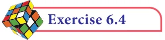
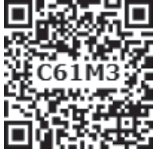

- 1.Find the value of the following:
- (i)sin49 \(^{\circ}\) (ii) cos74 39 (iii) tan54 26 (iv) sin21 21 (v) cos33 53 (vi) tan70 17
- 2.Find the value of q if
- (i)sinq \(= 0 9975\) . (ii) cosq \(= 0 6763\) . (iii) tanq \(= 0 0720\) .
- (iv)cosq \(= 0 0410\) . (v) tanq \(= 7 5958\).
- 3.Find the value of the following:
- (i)sin65 39 cos24 57 tan10 10 (ii) tan70 58 cos15 26 sin84 59
- 4.Find the area of a right triangle whose hypotenuse is 10cm and one of the acute
angle is 24 24
- 5.Find the angle made by a ladder of length 5m
with the ground, if one of its end is 4m away from the wall and the other end is on the wall.

- 6.In the given figure, HT shows the height of a
tree standing vertically. From a point P, the angle of elevation of the top of the tree (that is \(\angle P\) ) measures \(42 ^{\circ}\) and the distance to the tree is 60 metres. Find the height of the tree.


Multiple choice questions
- 1.If sin30 x and cos60 y , then \(x + y\) is

\((1) \frac{1}{2} (2) 0 (3)\) sin90 \(^{\circ} (4)\) cos90 \(^{\circ}\)
- 2.If tanq cot37 , then the value of q is
\((1) 37 ^{\circ} (2) 53 ^{\circ} (3) 90 ^{\circ} (4) 1 ^{\circ}\)
- 3.The value of tan72 \(^{\circ}\) tan18 \(^{\circ}\) is
\((1) 0 (2) 1 (3) 18 ^{\circ} (4) 72 ^{\circ}\)
- 4.The value of \(\frac{2tan30}{1tan230}\) is equal to
(1) cos60 \(^{\circ} (2)\) sin60 \(^{\circ} (3)\) tan60 \(^{\circ} (4)\) sin30 \(^{\circ}\)
- 5.If 2sin2q \(= 3\) , then the value of q is
\((1) 90 ^{\circ} (2) 30 ^{\circ} (3) 45 ^{\circ} (4) 60 ^{\circ}\)
- 6.The value of 3sin70 sec20 2sin49 sec51 is
(1) 2 (2) 3 (3) 5 (4) 6
- 7.The value of \(\frac{1tan45}{1tan245}\) is
\((1) 2 (2) 1 (3) 0 (4) \frac{1}{2}\)
- 8.The value of cosec(70 q) sec(20 q) tan(65 q) cot(25 q) is
(1) 0 (2) 1 (3) 2 (4) 3
- 9.The value of tan1 \(^{\circ}\) tan2 \(^{\circ}\) tan3 \(^{\circ}\) ...tan89 \(^{\circ}\) is
(1) 0 (2) 1 (3) 2 (4) 3 2
- 10.Given that sina \(= \frac{1}{2}\) and cosb \(= 12\) , then the value of α + β is
\((1) 0 ^{\circ} (2) 90 ^{\circ} (3) 30 ^{\circ} (4) 60 ^{\circ}\)